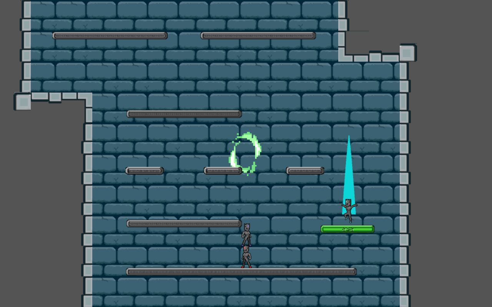
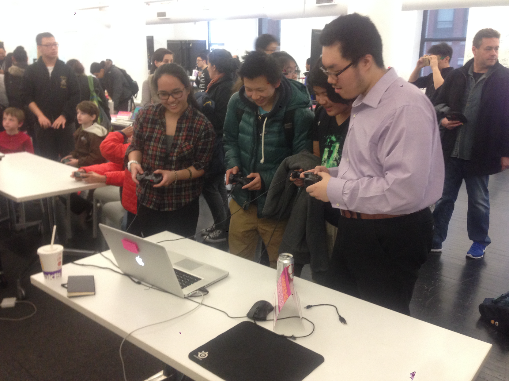

The game places a heavy emphasis on player mobility and control, as you must finesse your character to dodge attacks and stay alive.


Tower Rangers is essentially Doodlejump meets Speedrunners with a game feel like Super Meat Boy. For those that haven't played those games, Tower Rangers is a four player competitive, vertically ascending 2d platformer, in which the players must race to the top while killing their opponents in order to win. The game places a heavy emphasis on player mobility and control, as you must finesse your character to dodge attacks and stay alive. Strategically use your surroundings and powerups to climb to the top!
Simon Yang is a game designer who lives in NYC. He wants to design competitive multiplayer experiences and explore the interactions that keep a multiplayer game fresh.
The game places a heavy emphasis on player mobility and control, as you must finesse your character to dodge attacks and stay alive.